Belong. Learn. Thrive.
Our Purpose
To enable all pupils to be seen for who they truly are, respected for their individuality and empowered to achieve their full potential.
Our Vision
An education system where cultural diversity and multilingualism are celebrated and every pupil is seen as an asset.
Our Mission
Empower school leaders and educators, deliver high-quality training, develop equitable policies, strengthen home-school links and nurture support pathways locally. By being a champion for cultural diversity and multilingualism in education, we encourage every pupil to flourish.
How We Work
We include
We are driven by our purpose and believe every pupil should be seen for who they truly are, respected for their individuality and empowered to achieve their full potential.
We understand
We take the time to find out about each individual situation to identify the best route to take. We are respectful and empathetic at all times so we can guide effectively and build confidence.
We clarify
We make sure we are up to date in our field and education in general so that we can make pragmatic decisions, provide clarity and a clear path forward. We are aligned with up to date research and investigate each case thoroughly so we can utilise evidence based solutions.
We connect
We use our expertise to work in partnership with schools to achieve the best outcomes in multilingual classrooms. Through clear communication and a collaborative approach we engage with pupils, parents, staff and the wider school community in a friendly and supportive way.
We find a way
We believe that in order to provide the best outcome for all involved we need to be positive, flexible and have an open mind. All situations are different and we need to be able to adapt - we always find a way to move forward.
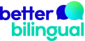
Resources
Blogs
‘EAL’ to ‘BML’: Announcing our positive change in terminology to an ‘asset-based’ approach to bilingualism and multilingualism
We’ve made a positive decision to switch our use of the term ‘EAL’ (English as an Additional Language) to ‘BML’ (Bilingual/Multilingual Learner). Why are we doing this? Our work with schools strongly indicates that there can be confusion over teachers’ and parents’ understanding of ‘EAL’ as encompassing the full range of English language proficiency; it is too often incorrectly used as interchangeable with ‘New to English’. In addition, the term ‘EAL’ places the English language as the focus.
Of course, our job in school is to develop the social and academic English needed for all pupils to ‘belong, learn and thrive’ (our new tagline!). However, research from Jim Cummins clearly shows that the ‘Common Underlying Proficiency’ (CUP) in a learner’s first language/s is a firm foundation on which to build additional languages, such as English in UK schools. We wish to place the superpower of bilingualism or multilingualism at the heart of an asset-based descriptor – hence, we’ll be predominantly using ‘BML’ (Bilingual/Multilingual Learner) on our website and in our work. Will you do the same in your school or organisation? Or perhaps you already do!
How can schools in England fund school improvement to benefit Bilingual/Multilingual Learners (BMLs)?
Are you accessing accurate funding from the DfE to support your BMLs (previously referred to as ‘pupils with English as an Additional Language’)? The DfE’s School Census (October) is coming up soon but the BML/EAL funding factor can appear hidden. It’s crucial that data for the ‘Language code’ [used for funding] item is populated accurately. To do so, the understanding of ‘First Language’ is essential. Many schools are missing out on significant BML/EAL funding due to them because of incomplete or incorrect data reporting. Our Better Bilingual Advice Sheet provides information to help you.
A bilingual blog in English & Azerbaijani by Turan (Year 7 Student, Bristol)
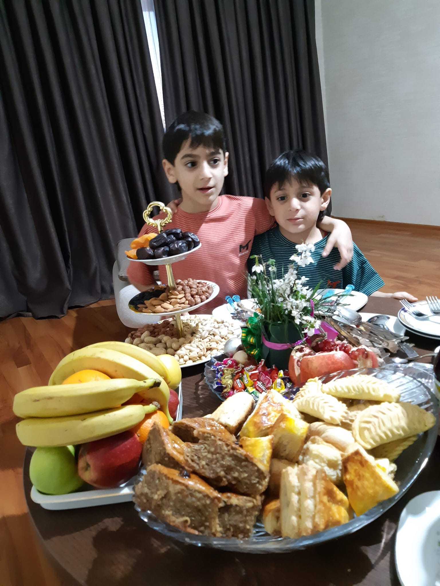
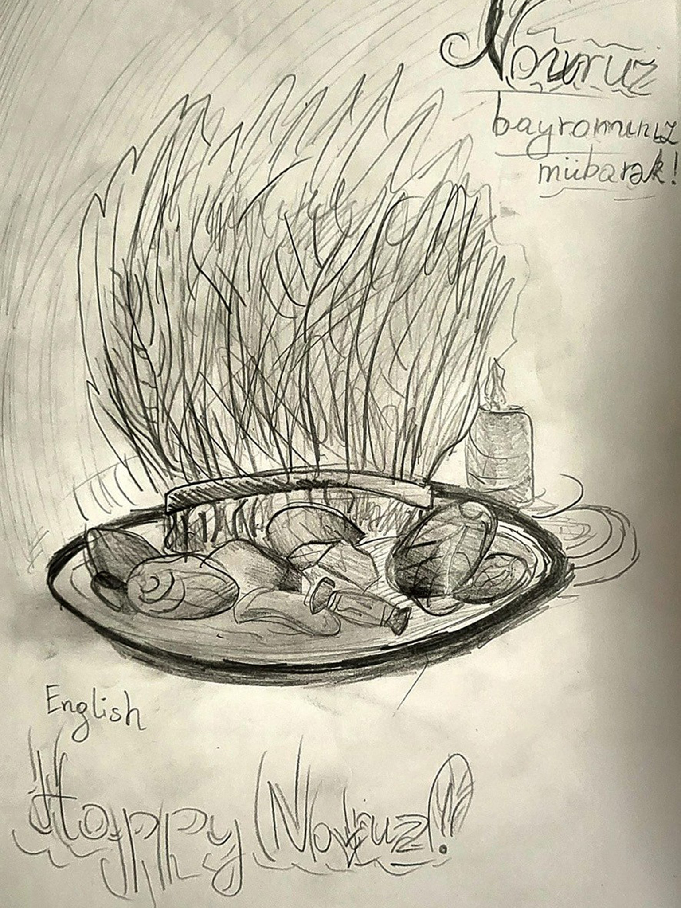
“One day, I wish to celebrate Novruz in my home country, Azerbaijan, with all my relatives—especially my grandma and grandpa. I’ve never been in Azerbaijan during springtime, so I’ve never experienced Novruz there. But we always celebrate it wherever we are, keeping our traditions alive. I know about semeni, and I really enjoy the egg-fighting tradition, even though I’m not a big fan of sweets. Still, I know that baklava, shekerbura, and qogal are the special treats for this holiday. I also love having guests. Even though we’re not in our home country, celebrating Novruz with friends here still makes me feel happy and connected to our culture.”
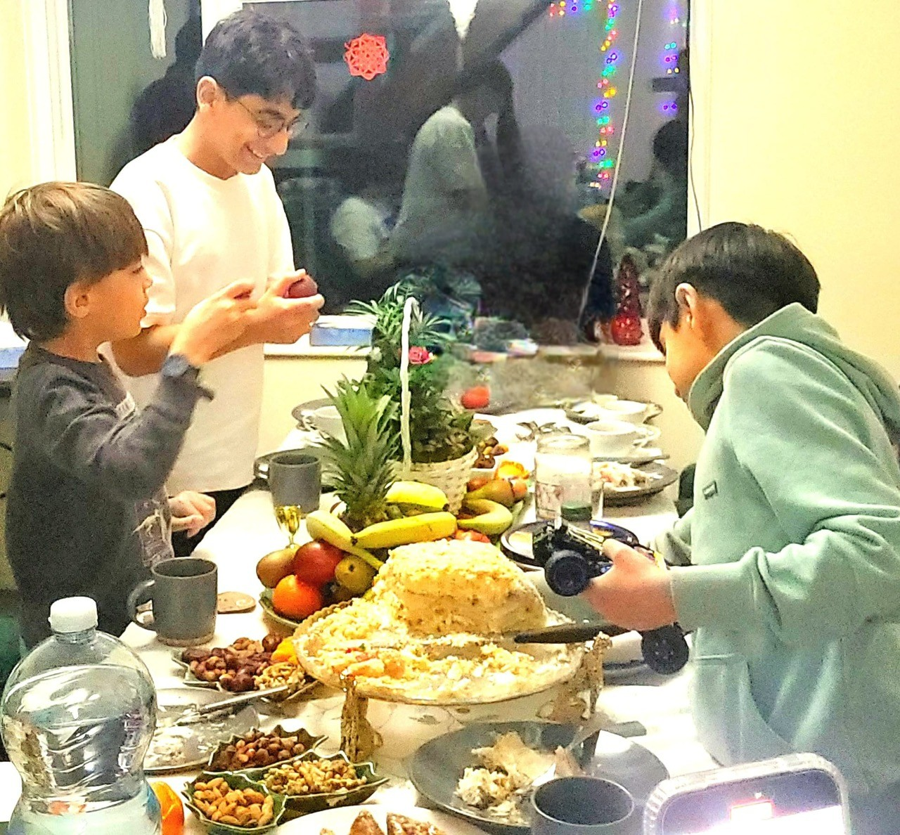
“Arzum budur ki, bir gün Novruz bayramını doğma vətənim Azərbaycanda, bütün qohumlarım – xüsusilə də nənəm və babamla birgə qeyd edim. Bahar vaxtı heç vaxt Azərbaycanda olmamışam və orada Novruzun necə keçirildiyini hiss etməmişəm. Amma biz harada yaşasaq da, bu bayramı həmişə qeyd edir, adət-ənənələrimizi yaşatmağa çalışırıq. Semeni haqqında yaxşı bilirəm. Şirniyyatı o qədər də sevməsəm də, bilirəm ki, Novruzun əsas təamları paklava, şəkərbura və qoğaldır. Yumurta döyüşdürmə ənənəsindən çox zövq alıram. Novruzda, qonaq getməyi və qonaq qarşılamağı da çox sevirəm. Doğma ölkəmizdə olmasaq da, burada dostlarımızla Novruzu qeyd etmək mənə özümü xoşbəxt və mədəniyyətimizə bağlı hiss etdirir.”
To find out more about the holiday called Noruz/Nowruz (Persian New Year – Spring Equinox) which is celebrated by 300 million people around the world, check out this Padlet link, kindly shared by Annie Asgard.
A blog by our Director, Catherine Brennan
It’s the start of another busy Autumn term – where did the Summer go? You have bags of enthusiasm and are well prepared for the year ahead.
It’s clear that staff need EAL training but time out of class and the CPD budget impose restrictions – what’s the best way forward?
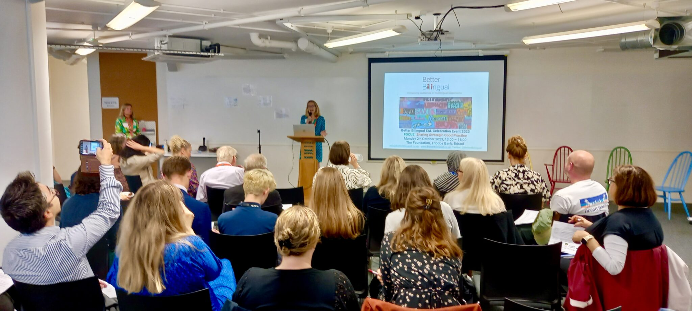
At Better Bilingual, we understand the multiple demands on educators which is why we’ve curated our annual EAL Celebration Event with three key outcomes from just one 3-hour CPD session:
- Training – learn from a range of guest speakers
- Resources – collect free resources to take back to school
- Networking – connect with experienced local teachers
This year’s speakers include Language Advisors, Authors, Specialist Leads in Education for Multilingualism and Founders of WoLLoW (World of Languages, Languages of the World).
Read more about all of them here.
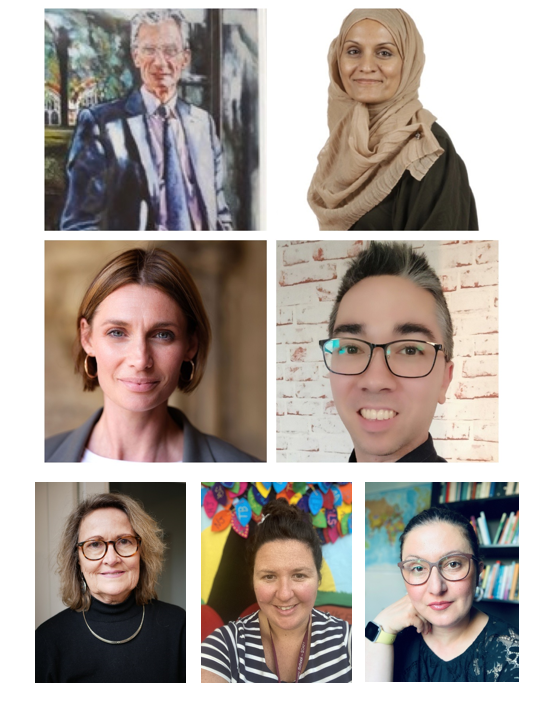
They also liked chatting with a range of exhibitors and networking with likeminded colleagues – leaving the CPD session with EAL inspiration, a range of practical ideas and new connections.
We also had very positive feedback about the delicious lunch from Baba Ganoush!
Do take a look at the photos to decide if this CPD opportunity is the way forward for you and feel free to get in touch if you’d like to chat about it or other EAL matters.
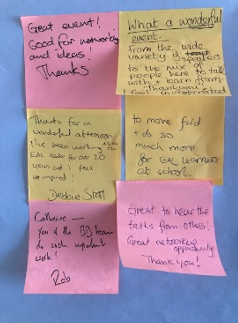
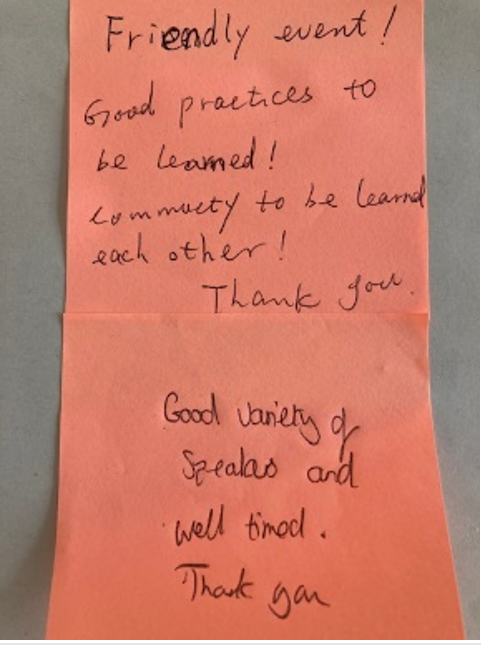
You can check out full speaker details and book your ticket by 16.09.24 via our Eventbrite page.
Hope to see you on 1st October – impactful EAL CPD in one 3-hour session in Bristol!
Better Bilingual EAL Celebration Event: feedback!
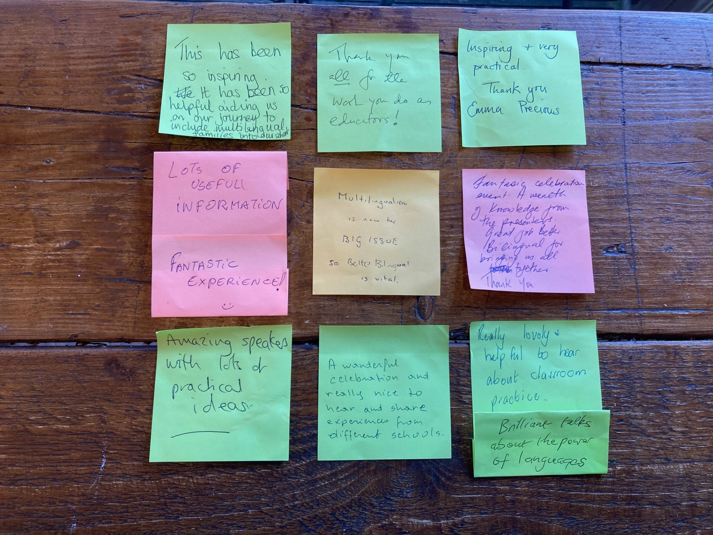
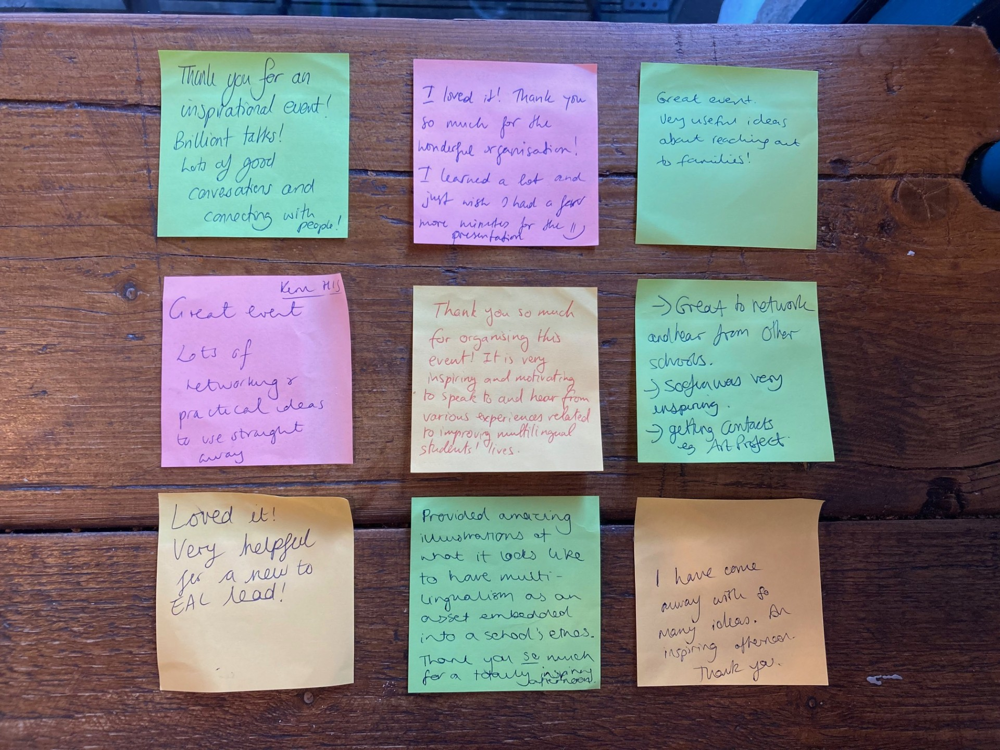
Who were our guest speakers and what did they talk about?
Soofia Amin – Assistant Head Teacher and Specialist Lead in Education for Multilingualism, Kensington Primary School, London
Mindsets and Multilingualism In this session I will share our school’s journey from focusing on supporting EAL, to one championing a whole school approach to Multilingualism.
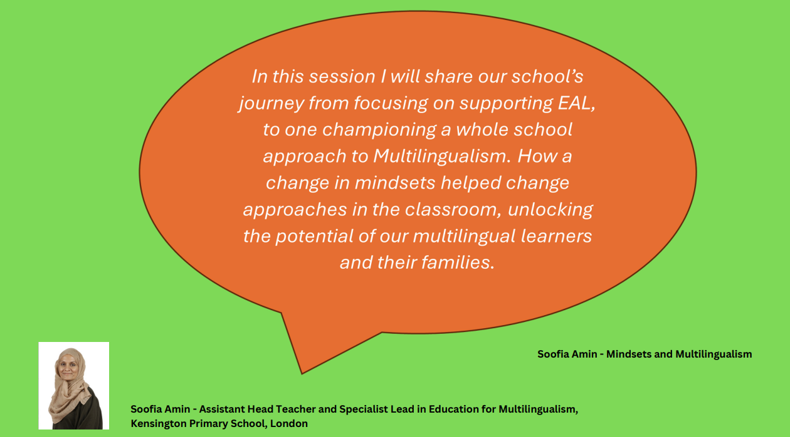
Yoshito Darmon-Shimamori – Teacher and Author specialising in multilingual literacy
The Library 4 Multilinguals Yoshito will showcase his series of books designed to help all of your multilingual students explore their languages and cultures in a fun way.
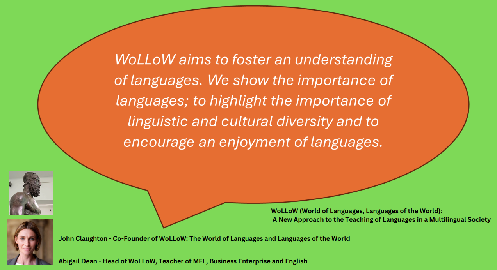
Maria Potvin – Language Adviser, Raising Bilingual Children
Building Bridges: Empowering Multilingual Learners Through Parent-School Collaborations Schools, educators and parents – we all share a common goal: supporting our multilingual learners on their unique journeys to becoming the best versions of themselves, both academically and personally. I’ll be discussing how we can build strong, effective collaborations between home and school…to bring these partnerships to life.
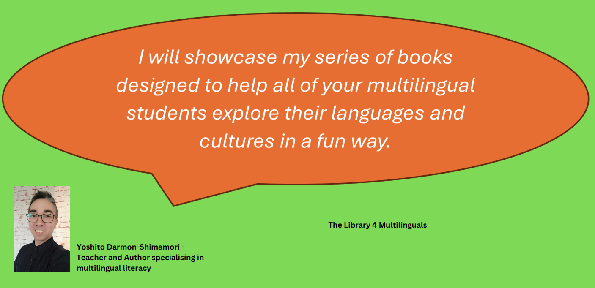
Meg Stacey – Assistant Head Teacher, St Mary Redcliffe Primary School, Bristol
Empowering Children through Translanguaging EAL has become a priority within our school development plan. This session will explore the journey that we are going through to empower our EAL learners to confidently use their first languages within the classroom environment.
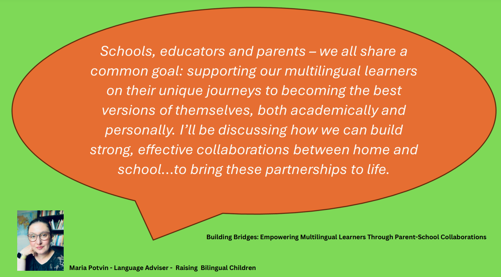
Glynis Lloyd – The Bell Foundation (Gold Sponsor)
Engaging with Multilingual Parents/Carers This talk introduces The Bell Foundation’s EAL and SEND: Guidance for Integrated Provision in Schools. The guidance promotes a holistic approach to identification and support of SEND and positions multilingual Parents/Carers as playing a central role in embedding effective provision.
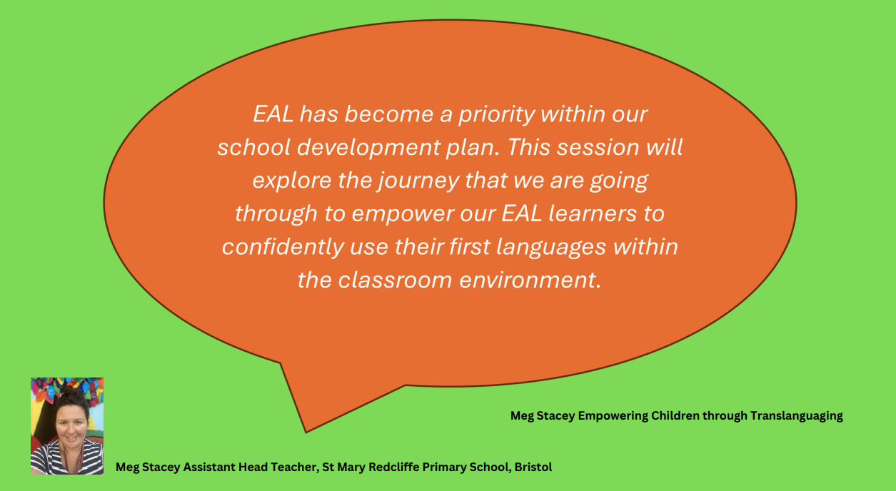
Our sponsors:
Huge thanks to our generous sponsors, without whom this event would be not possible!
🙌🙌🙌 Announcing our GOLD sponsor! 🥇 🥇 🥇
The Bell Foundation is a national charity which aims to overcome exclusion through language education by working with partners on innovation, research, training, and practical interventions. Through generating and applying evidence, we aim to improve practice, policy and systems for children, who use English as an Additional Language in the UK.
Glynis Lloyd from The Bell Foundation will be a guest speaker on 1st October – you can also find her on The Bell Foundation’s event exhibition stand!
🙌🙌🙌 Announcing our SILVER sponsor! 🥈🥈🥈
The EAL Academy – Developing literacy for a multilingual world
EAL learners present schools with exciting opportunities – getting it right for these learners will benefit the whole school and often in the most astonishing of ways.
We are school improvement specialists with a focus on the language of the classroom and subject-specific literacy.
Come and talk to us at our event exhibition stand on 1st October!
🙌🙌🙌 Announcing our BRONZE sponsor! 🥉🥉🥉
Across Cultures provides teachers, learners of any language background and parents with the tools needed to successfully support learners with English as an Additional Language
Come and talk to us at our event exhibition stand on 1st October!
Time to celebrate!
We hope this finds you well and anticipating a well-deserved rest! As we reach the end of another school year, we’re taking a moment to reflect on some Better Bilingual successes…
Our new branding
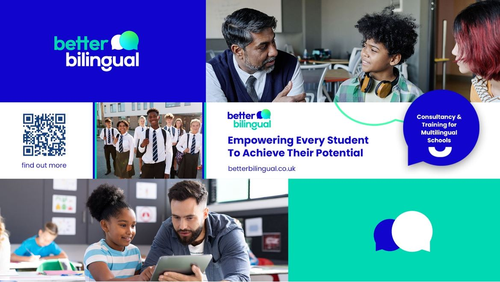
Very exciting to see the fruits of everyone’s hard work. Over the summer, we’ll be completing our rebranding activity in preparation for the official launch at our Better Bilingual Conference on 3rd October 2025 – save the date as this 5-year anniversary event will be extra special and not to be missed! We’re thrilled that the inspirational Soofia Amin from the Tapscott Learning Trust will be our keynote speaker, with the conference theme being ‘Belonging’.
Our new activities
This year, Better Bilingual has diversified its offer to meet local needs. We’ve loved working with the fabulous team at the Lifeskills Centre to further enhance inclusivity for their multilingual visitors. We’ve also stepped up our active support for asylum seeking pupils and families in our city through attendance at multi-agency BRASP meetings and a Quartet-funded arts project, with additional support from Burges Salmon.
All this in addition to our usual work in partnership with the EAL Academy, The Learning Partnership, NW24 and a range of schools and Early Years settings across the region and the UK.
Our new volunteers
‘Foufa has been a huge asset to our team during our Bristol Refugee Festival event. She is proactive, has great ideas and wonderful people skills!’ (Peri Taylor, Better Bilingual Events Manager)
‘I am grateful to volunteer for Better Bilingual. I experienced a connection to the asylum seeker and refugee community and was able to connect to people and be a hand of help to those experiencing the same circumstances as my family.’ (Foufa Issaad – Better Bilingual Volunteer)

Do contact us if you’d like to volunteer for Better Bilingual in 2025-26 and click here to discover what the ‘World of Flavours’ activity was all about. More testimonials here too!
Our new resources
Constantly updated with the latest language-friendly resources for your classroom and curriculum area, why not have a browse through our resources over the holidays (after a proper rest, of course)? We love feedback to do get in touch if you’ve found something particularly helpful or if you’d like to recommend a brilliant resource for us to add!
Our new partnership approach
From September 2025, in response to your feedback, we’ll be offering even more flexible options for your school or organisation to access our expert Better Bilingual consultancy and resources when you need them. Further information to follow soon about our exciting new membership options and do reach out in the meantime if you’d like to chat to us sooner.
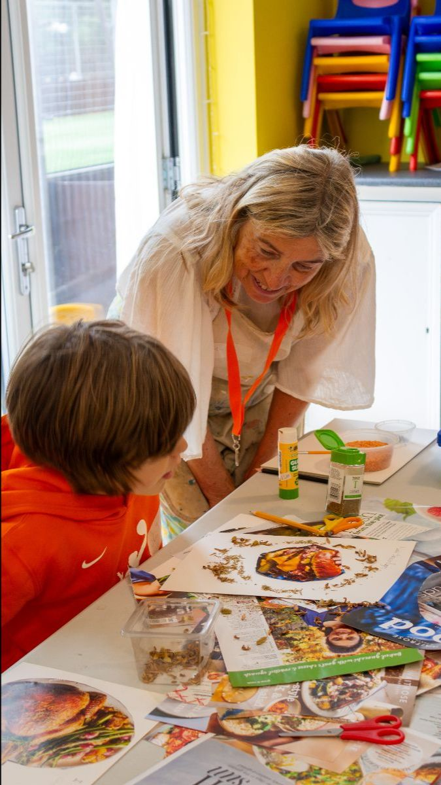
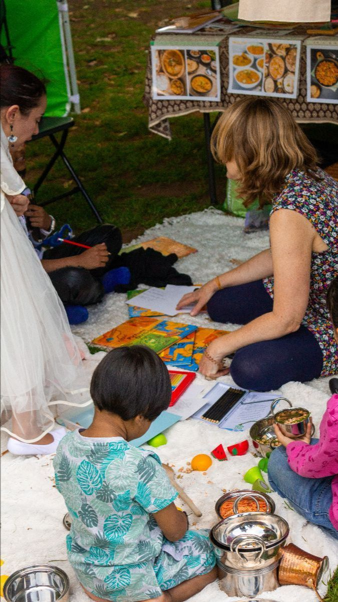
Happy Holidays
As always, we thank you for your support and engagement with Better Bilingual – Empowering Every Student to Achieve Their Potential and wish you a wonderful Summer break!
Catherine & the Better Bilingual CIC Team
Celebrating Nowruz
Did you know that Nowruz (the Persian New Year) is celebrated by 300 million people around the world? In this newsletter, we’re thrilled to share Year 7 student Turan’s thoughts and pictures about how he and his family celebrated recently, in an English/Azerbaijani blog here
Discount code for upcoming CPD sessions - book before Monday!
It’s been a busy few months for the Better Bilingual team in terms of listening - to pupils, parents, sanctuary seekers, teachers and education leaders. Our listening has led to greater understanding which has been invaluable for the strategic thinking around our mission.
Check out our ‘What’s New’ page here to find out what we’ve been up to and to discover how the CPD Discount Code MARCH50 can help you to save money on our upcoming Better Bilingual CPD courses in the Summer Term.
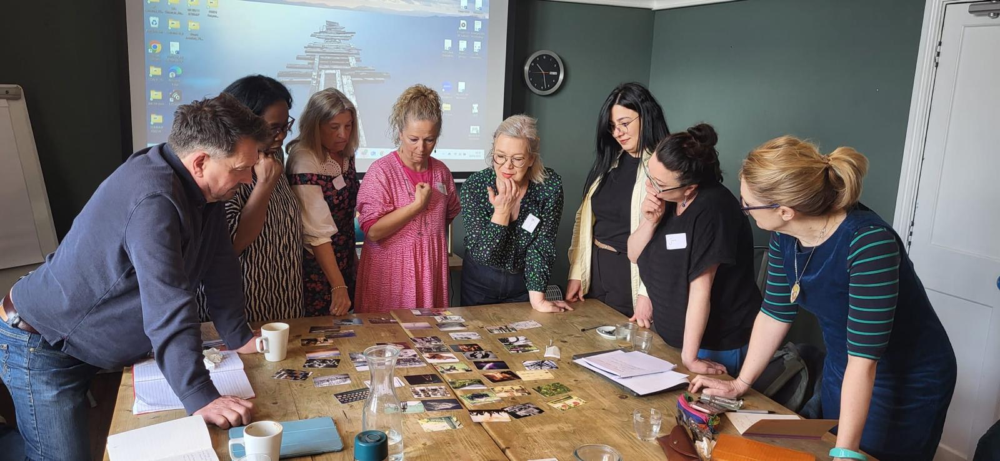
Bristol Refugee Festival
Next term will also be busy with our involvement in the Bristol Refugee Festival, which Peri, our Events Manager, has been leading on. If you’re looking for inspiration for a school activity, we love this idea from Sabine Little.
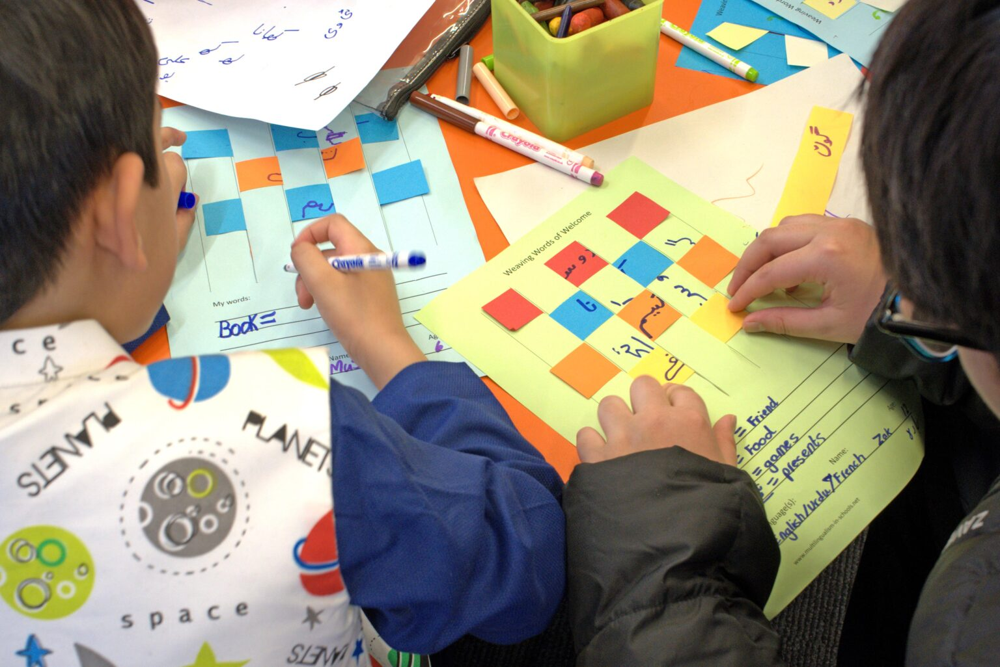
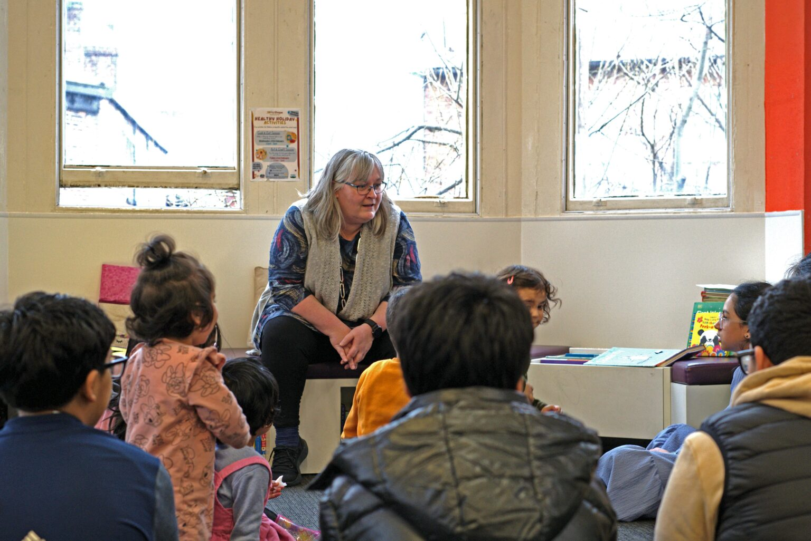
We started by highlighting Nowruz and we’ll finish with Eid Mubarak and Happy Easter greetings!
Thank you for reading and all the best for your weekend ahead – we’ll see you soon!
Catherine & the Better Bilingual CIC Team
2024 in pictures and plans for 2025!
Welcome to our first newsletter of 2025 which has been incredibly busy already!
But before that, we’ve been reflecting on the variety of activities that the Better Bilingual Team took on in 2024. It was so hard to select just a few memories to share but we hope this short film gives you a flavour – it’s certainly made us feel very grateful to do the work we do with such amazing colleagues and resilient, talented young people!
Thank you to everyone who worked with us in 2024 and we hope it will continue this year.
Updates and new training dates for the diary
It’s not long until International Mother Language Day on 21st February 2025 and we have just announced new Better Bilingual training dates too.
If you’d like to contribute updates in the form of ‘success stories’ from your school or MAT, please get in touch!
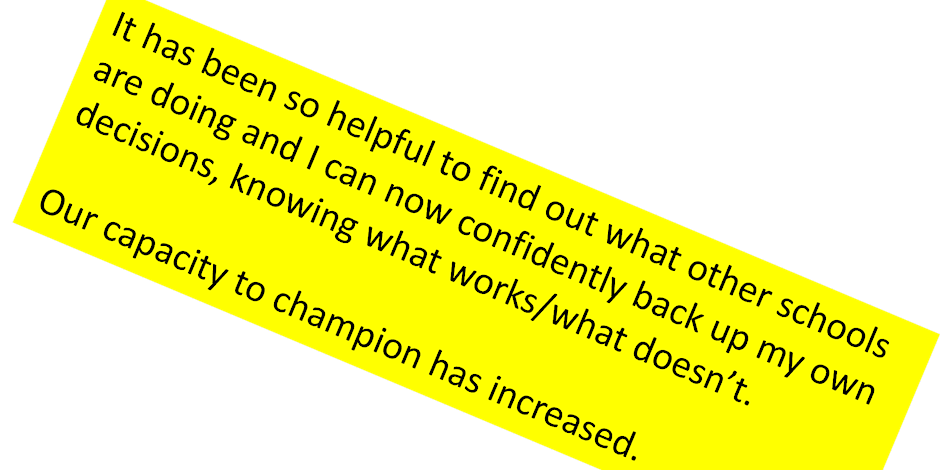
What's next for Better Bilingual?
After months of Bristol Local Access Partnership (LAP) support from the School of Social Entrepreneurs (thank you, everyone!), we’re delighted to announce that:
- Our Director, Catherine Brennan, is now officially a Fellow of the School of Social Entrepreneurs
- The LAP grant funding has enabled us to complete our very exciting rebrand with Elements – watch out for our new logo very soon and our new website after that
- We will shortly be announcing new members of our Better Bilingual Team…
- We’re looking for enthusiastic volunteers to join us as we grow – please email info@betterbilingual.co.uk to request an information pack if you’re interested!
Thank you for reading and all the best for the year ahead – we’ll see you soon!
Catherine & the Better Bilingual CIC Team
2026 Newsletter
Greetings to one and all! We hope 2026 has started positively for you, your pupils and families.
A big thank you to everyone who registered for our January conference. It was a significant blow to have to cancel this event but we’ve been overwhelmed by your messages of support and encouragement – thank you to everyone who’s been in touch. It’s a tough time financially in education at the moment and this extends to releasing staff to attend CPD events. However, we’ve been busy planning alternative events for you to enhance your multilingualism expertise.
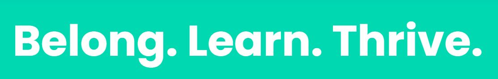
This is what our Better Bilingual mission is all about – giving each and every multilingual pupil the best chance to belong, learn and thrive. In this Spring Newsletter, we’ll share news about our current ‘Bristol Family Hubs’ Early Years project and our upcoming CPD offer.
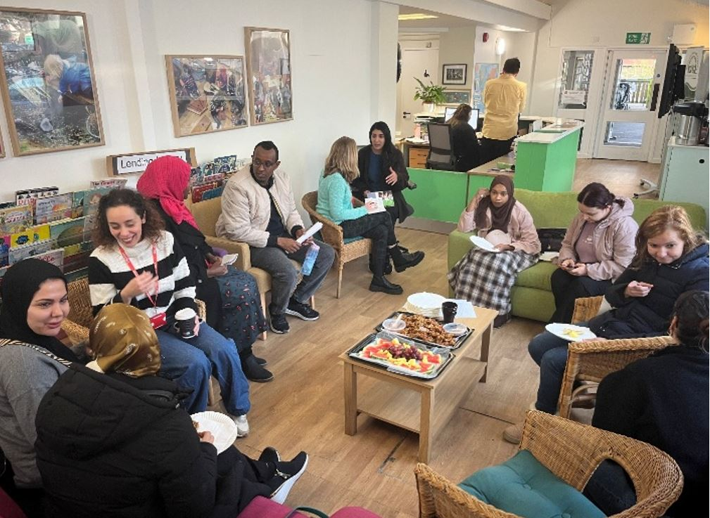
Multilingualism in the EYFS
In partnership with Redcliffe Nursery School, we’ve been working on a Bristol Family Hubs ‘Test & Learn’ multilingualism project, grant funded by Bristol City Council.
It’s been a pleasure to meet a range of nursery parents to research and feed back on better ways to support multilingual children and families attending nursery, especially displaced families learning to navigate new systems.
Read on to hear about our current and upcoming CPD opportunities, with full details available on our new website – with huge thanks to our designer, Eddie Cranmer, for his excellent work.
Online CPD – via MS Teams
‘New to English’ Induction CPD Programme:
This two-session online CPD introduces schools to the Better Bilingual ‘New to English’ Induction Programme, a structured 6–8 week intervention designed to help newly arrived pupils rapidly develop survival English and feel included.
Multilingualism (EAL) Champions CPD Programme:
The Multilingualism (EAL) Champions programme is an online CPD course designed to build whole-school capacity for multilingual education and Equity, Diversity, Inclusion and Belonging (EDIB).
In-Person CPD – kindly hosted by our corporate partner, Burges Salmon (Bristol)
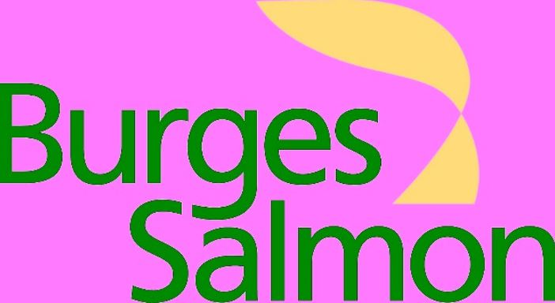
Adaptive Teaching for Bi- & Multilingual Learners (BMLs):
This in-person CPD session focuses on adaptive teaching approaches to improve attainment for bi- and multilingual learners, particularly those working at English proficiency Bands C and D.
Summer Network Meeting - ‘Multilingual Motivators’ Launch:
This twilight network event launches our Multilingual Motivators initiative, a volunteer programme designed to celebrate pupils’ first languages and strengthen their sense of belonging. This initiative, sponsored by Burges Salmon, aims to increase pride in multilingualism while accelerating English language development and academic success.
Click here for further details of all our CPD events and to book your place.
International Mother Language Day
What better opportunity to celebrate multilingualism than International Mother Language Day? Read all about this annual event here and check out Twinkl for a wealth of free resources.
Xin Nian Kuai Le (新年快乐)
Wishing everyone a relaxing half-term and Xin Nian Kuai Le (新年快乐) or ‘Happy New Year’ to all who are celebrating!
We look forward to seeing you soon,
Catherine & the Better Bilingual CIC Team